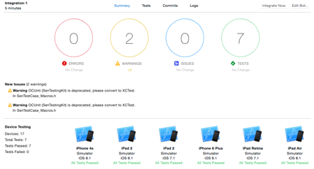
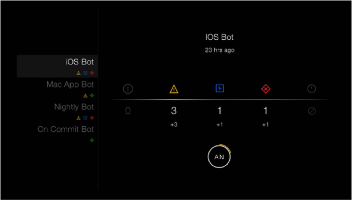

Integração Contínua, Xcode Server, Bots e OCLint
INTRODUÇÃO
Uma das técnicas utilizadas em metodologias ágeis, como XP e Scrum, é a integração contínua. Ela garante que a cada build o sistema funciona de forma coesa, verificando se as alterações do código ou novas funcionalidades criaram novos defeitos no projeto, mas é importante que se tenha um controle de versão centralizado.
“Integração Contínua é uma pratica de desenvolvimento de software onde os membros de um time integram seu trabalho frequentemente, geralmente cada pessoa integra pelo menos diariamente – podendo haver multiplas integrações por dia. Cada integração é verificada por um build automatizado (incluindo testes) para detectar erros de integração o mais rápido possível. Muitos times acham que essa abordagem leva a uma significante redução nos problemas de integração e permite que um time desenvolva software coeso mais rapidamente.”
XCODE SERVER
Na WWDC 2014 a Apple apresentou a nova versão do Xcode Server que junto ao Xcode 5, ou superior, forcenem uma maneira de realizar Integração Contínua atráves de Bots, que realizam a automação de builds, análise de código, teste e archive do projeto e até mesmo distribuição automática!
A configuração é bem simples, e é necessário um Mac rodando o Yosemite. Após a instalação a configuração básica é o Xcode, que também precisa estar instalado na máquina. A partir daí toda configuração é feita no sei Mac de development.
BOTS
Como dito anteriormente, os Bots são responsáveis pela Integração Contínua. Temos algumas configurações na hora de criar o Bot, como:
- Vincular seu repositório: Como vamos usar um controle versão e muito provavelmente o projeto terá várias pessoas trabalhando em paralelo, desta forma sempre que houver a integração o Bot utilizará a última versão do código no seu repositório;
- Schedule: É possível agendar quando haverá a integração. Uma vez por dia, a cada 5 minutos, sempre que houver um novo commit;
- Actions: Executar análise estática, teste e archive;
- Cleanning: Uma vez por dia, nunca. Caso o projeto fique muito grande e você tenha várias integrações por dia, então deixar o cleanning para cada integração talvez não seja uma boa, pois a Integração pode levar muito tempo para ser realizada;
- Testes: Você escolhe os aparelhos em que deseja testar, também é possível utilizar devices ao invés de simuladores, e esses necessitam estar conectados no servidor;
- Notificações: Aqui é uma parte em que a Integração Contínua se torna o vilão dedo duro, pois é possível configurar receber notificações por email de testes que falharam, builds com erros e warnings e análise estática.
Os relatórios da integrações ficam disponíveis de duas formas:
Relátorio na máquina de development
Aqui é possível ver detalhes de build de cada projeto, bem como a quantidade de erros e detalhes, warings e detalhes, issues e tests sucedidos ou não, quais aparelhos foram testados, commits e logs.
Relatório do Xcode Server.

Já no relatório gerado pelo servidor, apenas um resumo é exibido contento a quantidade de erros, warnings, issues e erros adicionados ou removidos na última integração. O relátorio fica alterando automáticamente entre os projetos e também é possível ver as pessoas que fizeram commit e a porcentagem de commits, erros e warnings de cada pessoa.
OCLINT
Contudo esses relátorios só serão exibidos após a integração, ai você se pergunta “E agora Moisés? Só vou descobrir o que tem de errado depois que me dedurarem?”. Muita hora nessa calma! Existem dois jeitos de você saber como está seu código, um deles é a análise estática feita pelo próprio Xcode e o outro é utilizar o OCLint
"OCLint é uma ferramenta de análise estática de código para melhorar a qualidade e reduzir os defeitos inspecionando C, C ++ e código Objective-C e à procura de potenciais problemas como: Possíveis como erros - if vazios / else / try / catch / finally declarações.”
Básicamente ele analisará seu código e atráves de uma lista de regras, configuráveis, ele irá reportar problemas e possíveis problemas no seu projeto. Facilitando sua vida e todos o que forem pegar o projeto e você não precisará ficar receoso de subir seu código para integração :)
Essa foi apenas uma abordagem introdutória sobre esses 4 assuntos. Caso queira se aprofundar mais, eu recomendo esses links: